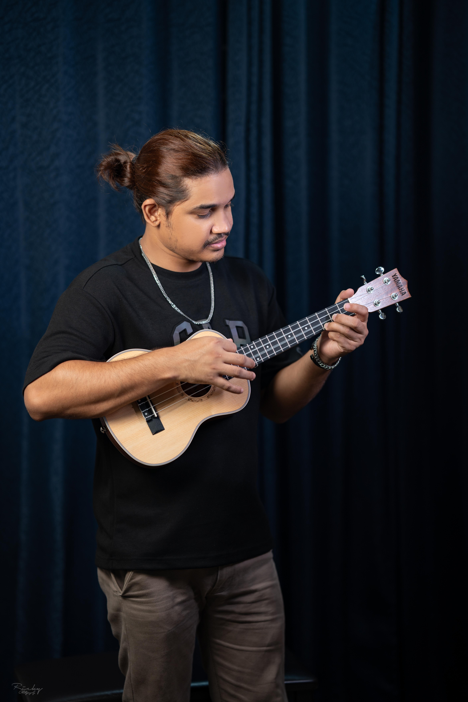
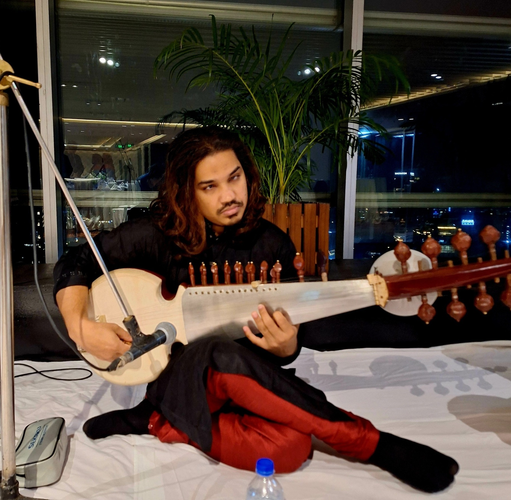

Photo Album




Also known as Abul Kasem
Ashikur Rahman, known as Abul Kasem, was born on March 27, 2002, in Brahmanbaria, the cultural capital of Bangladesh. Coming from a lineage of musical legends—his mother, Anwara Rahman, being the first female sarod player in the nation, and his late father, Afzalur Rahman, a globally acclaimed sarod maestro—Ashikur was destined for music.
Despite visual impairment, Ashikur and his two sisters, also blind and talented writers, have become the family's main support. His journey began early, mastering complex instruments such as the Sarod, Sitar, and Violin.
He won the National Children Award in 2014 and was honored by the Shilpakala Academy in 2018. He has performed on national and international stages including BTV, MYTV, CTV, and Nexus TV, as well as venues like the National Art Gallery of Singapore.
His Oikko Channel I Music Award in 2022 is a testament to his talent. He remains committed to education as a vital part of his future.
"Music is not just what I do; it's who I am."
Excellence in Classical Instrumental Performance
2022
Featured Artist at Asian Cultural Festival
2020
Recognition for Contribution to Classical Music
2018
Winner for Outstanding Sarod Performance
2014
Featured artist on Bangladesh Television's "Classical Heritage"
Guest performer on "Rising Talents" showcase
Special interview and live performance
Featured in documentary on young musical talents
Regular guest artist for live radio performances
"Education is the cornerstone of future success."
Independent University,Bangladesh
2022 - Present
National Music Institute, Bangladesh
2017 - 2020
Under the guidance of parents
2007 - 2017
For performance bookings, educational workshops, or media appearances, please contact directly via email or WhatsApp.